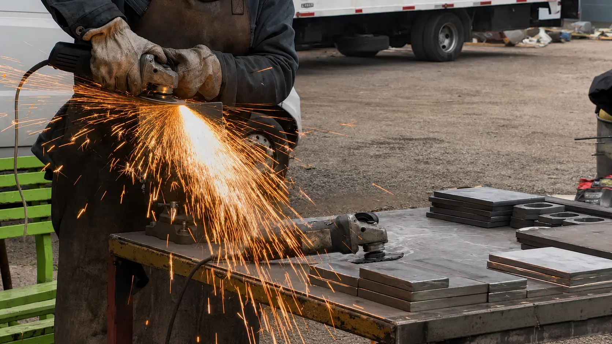

Trabajo realEsmerilado y terminaciones
Pulido y terminación de piezas metálicas
Proceso real de desbaste y pulido para retirar rebabas, suavizar aristas y preparar piezas cortadas antes del armado o la entrega. Las imágenes muestran la pieza sujeta, el trabajo con esmeril angular y la terminación progresiva del borde.
Abrir caso documentado →